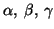
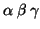
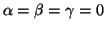

This flag rotates the tip around the x, y, z axes by the angles

(in degrees) respectively prior to relaxation. It must appear before the coordinates of the atoms.Options:

Default: off,

Example: rotate 0.0 0.0 45.0